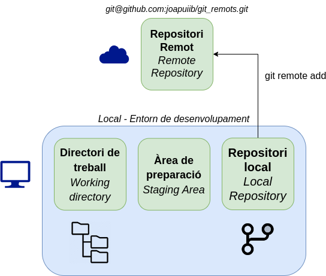
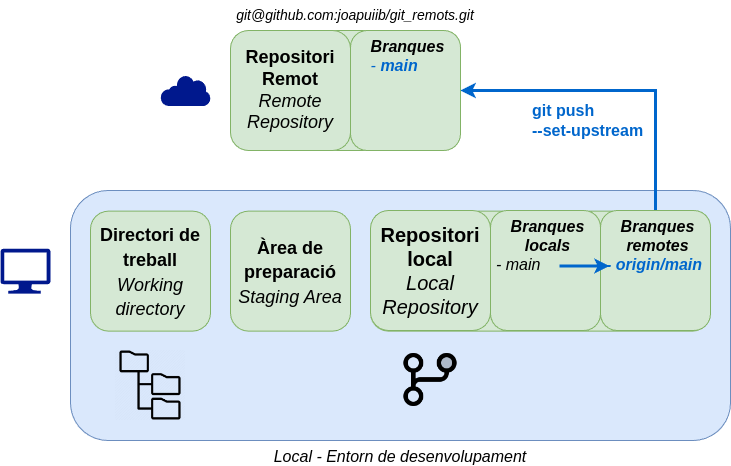
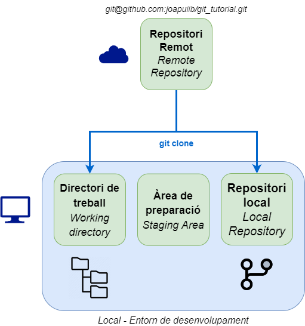
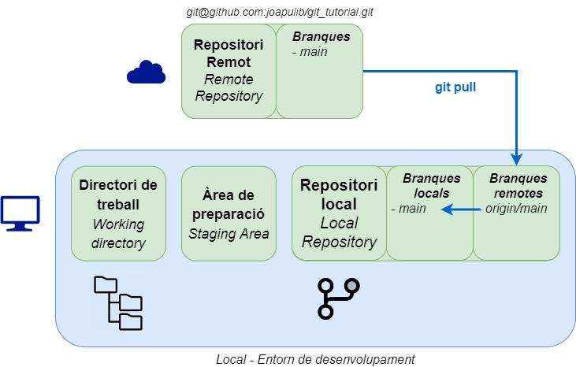

<!doctype html>
<html>
<head>
    <meta charset="utf-8">
    <meta name="viewport" content="width=device-width, initial-scale=1.0, maximum-scale=1.0, user-scalable=no">
    <!-- Page description -->
    

    <!-- Page author -->
    
        <meta name="author" content="Joan Puigcerver Ibáñez" />
    

    <!-- Canonical -->
    
        <link rel="canonical" href="https://joapuiib.github.io/curs-git/videos/032_remots_slides/" />
    

    <!-- Favicon -->
    <link rel="icon" href="../../assets/images/favicon.png" />

    <!-- Site title -->
    
      
        <title>Bloc 3.2: Remots - Introducció a Git i la seua aplicació a l’aula</title>
      
    

    
        <link rel="stylesheet" href="https://unpkg.com/katex@0/dist/katex.min.css">
        <link rel="stylesheet" href="https://cdnjs.cloudflare.com/ajax/libs/reveal.js/5.1.0/reveal.min.css">
        <link rel="stylesheet" href="https://cdnjs.cloudflare.com/ajax/libs/reveal.js/5.1.0/reset.min.css">
        <link rel="stylesheet" href="https://cdnjs.cloudflare.com/ajax/libs/reveal.js/5.1.0/plugin/highlight/monokai.min.css">
        <link rel="stylesheet" href="https://cdnjs.cloudflare.com/ajax/libs/reveal.js/5.1.0/theme/white.min.css">
        <link rel="stylesheet" href="../../stylesheets/slides.css">
    

    <!-- Meta tags from front matter or plugins -->
    

</head>

<body>

    
    <div class="reveal">
      <div class="slides">
        <section data-markdown
                 data-separator="^\n---\n$"
                 data-separator-vertical="^\n--\n$"
                 data-notes="^Note:">
          <script type="text/template">
            ## Remots

#### Introducció a Git i la seua aplicació a l’aula

---

## Repositori remot


---

## Desenvolupament distribuït


---

## Afegir un repositori remot

```bash
git remote add origin <url>
```

- (_HTTPS_) Personal Access Token (PAT)
- (_SSH_) Clau SSH



---

## Associació branques locals i remotes

```bash
git push [-u | --set-upstream] origin <branca>
```



---

## Clonar un repositori

```bash
git clone <url> [<directori>]
```



---

## Sincronització

```bash
git fetch
```


---

## Integració de canvis

```bash
git pull [--rebase]
```


          </script>
        </section>
      </div>
    </div>
    

    
        <script src="https://cdnjs.cloudflare.com/ajax/libs/reveal.js/5.1.0/reveal.js"></script>
        <script src="https://cdnjs.cloudflare.com/ajax/libs/reveal.js/5.1.0/plugin/markdown/markdown.min.js"></script>
        <script src="https://cdnjs.cloudflare.com/ajax/libs/reveal.js/5.1.0/plugin/notes/notes.min.js"></script>
        <script src="https://cdnjs.cloudflare.com/ajax/libs/reveal.js/5.1.0/plugin/zoom/zoom.min.js"></script>
        <script src="https://cdnjs.cloudflare.com/ajax/libs/reveal.js/5.1.0/plugin/math/math.min.js"></script>
        <script src="https://cdnjs.cloudflare.com/ajax/libs/reveal.js/5.1.0/plugin/highlight/highlight.min.js"></script>
    

    
        <script>
          // Full list of configuration options available here:
          // https://github.com/hakimel/reveal.js#configuration
          Reveal.initialize({
            controls: true,
            progress: true,
            history: true,
            center: true,
            hash: true,

            transition: 'default', // default/cube/page/concave/zoom/linear/fade/none
            // Learn about plugins: https://revealjs.com/plugins/
            plugins: [ RevealMarkdown, RevealNotes, RevealZoom, RevealMath, RevealHighlight ]
          });
        </script>
    

</body>
</html>